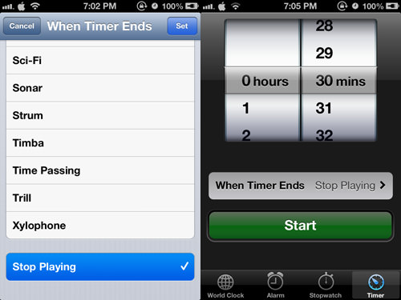
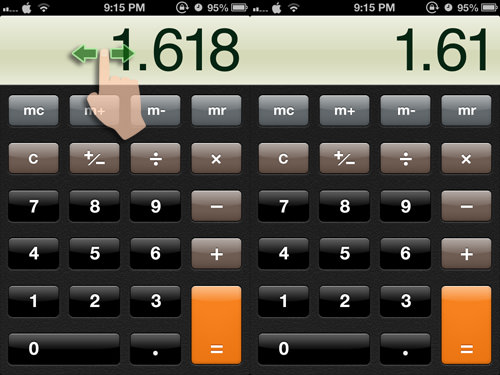
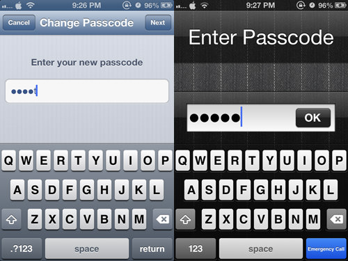
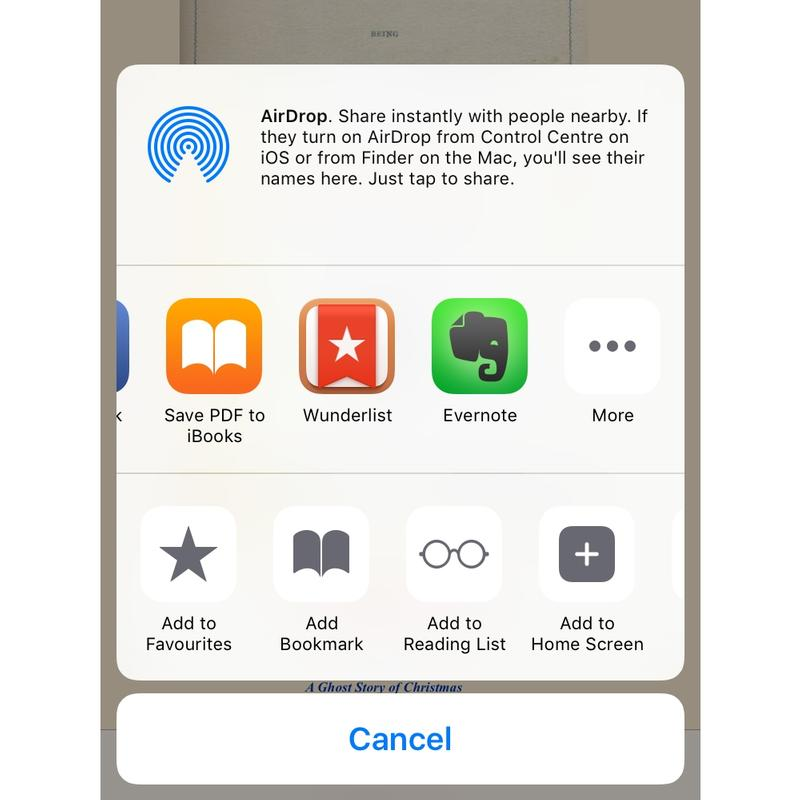
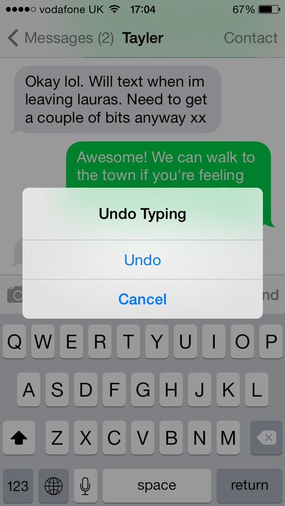
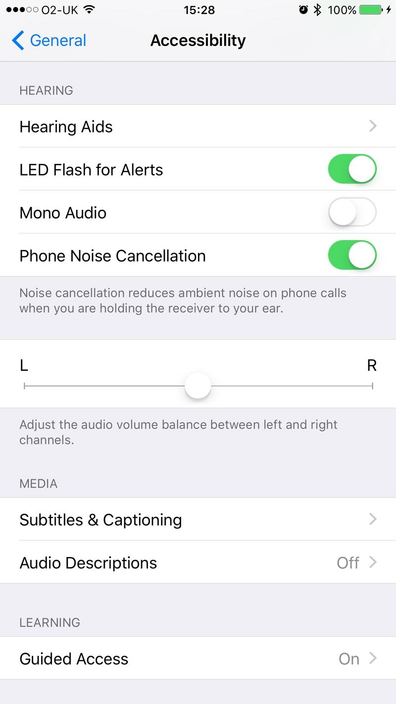
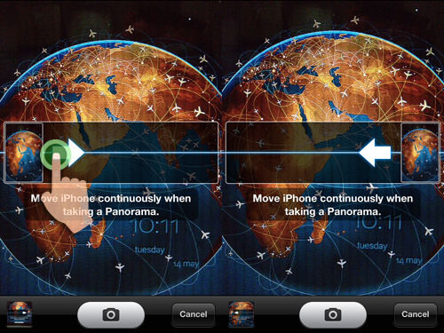

1. Save Battery Life (When It Is Running Low)
When your iPhone battery is running low, turning off the following settings can help make your iPhone last longer. With these off, you can still receive calls, SMS and even go online with EDGE connection.
2. Stop The Music With A Timer
Do you like to listen to music when getting into bed for the night but often doze off without switching the iPhone off? You can use a timer to help you shut down the music. To do this, tap on Clock > Timer > When Timer Ends. Scroll down and tap Stop Playing. Then, set a timer (say 30 mins) and tap Start. Now you may play any music and it will be turned off after 30 mins.
3. Delete Last Digit in Calculator App
Entered a wrong digit in the Calculator app? Instead of tapping the Clear [C] button, you can just swipe your finger to the left or right of the numbers to clear the last digit. Each swipe will remove the last digit until the number becomes zero.
4. Set An Alphanumeric Passcode
Add an extra layer of protection to your iPhone with an alphanumeric passcode. To activate it, go to Settings > General > Passcode Lock. Turn off Simple Passcode and you will be prompted to enter your alphanumeric password.
5. Use Headphone Cord to Take Photo
Shaky hands not getting you good photos? Well you can trigger a snapshot using the volume up or down buttons on your headphone.
6. Save PDF to iBooks
You can turn web pages into PDFs and add them directly to your iBooks app. This is handy if you're reading a long web document, or especially if you've found a HTML book online and want to keep a copy of it.
When you tap Share, scroll across the apps to find Save PDF to iBooks. Tap it and the web page will be converted and added to your book collection.
7. Shake to undo
This one can be a little awkward at times but it can be a bit of a life saver. If you've just typed a long sentence and accidentally deleted it, or made some other catastrophic error, you can give your iPhone a shake to bring up the undo/redo dialogue box. Just make sure you're holding on to your iPhone tightly before you shake it!
Since implementing this feature Apple has added an undo button to the system keyboard, thankfully, but this only appears when the iPhone is in landscape mode. If you can't be bothered to type like that, get shaking.
8. Quick-delete in the Calculator app
If you use the calculator app a lot, you might like this handy and little-known time-saving trick.
The Calculator app, like real-world calculators, doesn't have a delete button, which can be annoying if you've just typed out a long number and made a mistake right at the end. Fortunately you can swipe across the number in the black area at the top - left or right, it doesn't matter - and for each swipe, a single digit will be removed from the end of the figure.
9. Get your iPhone's flash to blink when you get a message
If you find that the vibration or sound that your phone makes when you get a message is not always enough to attract your attention, there's another element that you can add to the alert: light. By going to Settings > General > Accessibility and scrolling down to the 'Hearing' section (this feature is designed for people with hearing impairments), you can turn on 'LED Flash for Alerts'.
Now every time you get a notification, the flash next to your iPhone's rear-facing camera will blink.
6. Switch Shooting Directions in Panorama
Tap the arrow in Panorama mode to switch the shooting direction so you can take a panorama picture from left to right or right to left.
 http://www.hongkiat.com/blog/iphone-more-tips-tricks/